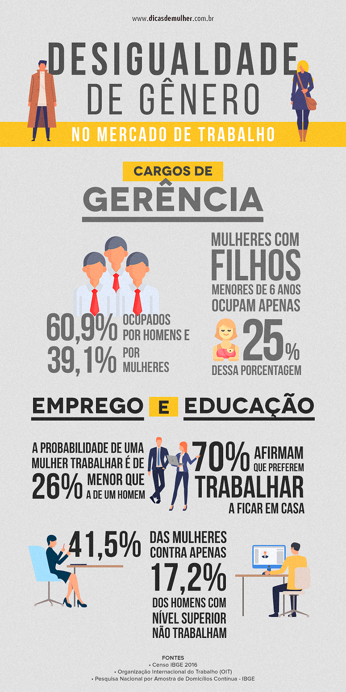

O Fim das Ilhas
Como a Mudança Climática afeta as ilhas:
O Aquecimento Global é um fenômeno que vem sendo registrado e estudado durante as últimas décadas, nele temos o aumento progressivo das temperaturas e pelo que já se sabe, esse aumento de temperatura pode levar a constantes aumentos dos níveis dos oceanos e mares. “Segundo uma notícia publicadapela BBC News Mundo em 2020, “Acredita-se que as ilhas de Kiribati serão engolidas pelo oceano em 10 ou 15 anos, deixando sem lar as mais de 100.000 pessoas que vivem nelas”,
Mas você já parou para pensar que isso pode ser só o começo? A resposta pode servariada, “a mas isso são previsões, talvez nem aconteça”, “Aquecimento Global nem existe”. Que cada um tem sua opiniãoequetemos de respeitá-lajásabemos, mas podemos orientá-las a pesquisar e se basear em fundamentos, ou seja, um artigo publicado por um cientista, notícias publicadas por sites e revistas conhecidas e que se baseiem em argumentos contundentese não só uma publicação feita por um conhecido ou compartilhada por um amigo sem conhecermos as fontes. As vezes temos que ficar com um pé atras antes de concordar com a opinião de algumas pessoas ou até mesmo posicionamentos políticos antes de sair compartilhando informações que não se baseiam em nada.
Sabendo disso, e pesquisando mais sobre Mudança Climática, antes de compartilhar uma Fake News sobre o assunto você poderá concluir que sim a Mudança Climática existe e vem se intensificando de maneira rápidae progressivanos últimos anos. Um dos principais fatores da Mudança Climáticase deve as altas taxas de emissão e concentração do gás de efeito estufa, na atmosfera, que é um fenômeno natural no qual o planetaretém o calor emitido pelo sol, e assim, garante que a atmosfera consiga manter uma temperatura ideal e adequada para que exista vida na terra.Segundo a Professora Vanessa Pinsky em um Artigo publicado em 2021 “São quatro os principais gases causadores da intensificação do efeito estufa: Monóxido de Carbono (CO), Dióxido de Carbono (CO2), Clorofluorcarbonos (CFC), Óxido de Nitrogênio (NxOx), Dióxido de Enxofre (SO2), Metano (CH4)”. Esses gases chegam até atmosfera de diversas maneiras,como através do desmatamento, uso de fertilizantes na agricultura, através da decomposição do lixo feita sem nenhum cuidadoe principalmente através do uso de combustíveis fósseisque são emitidos pelos carros, motos e caminhões.
Cientistas, estudiosos e pesquisadores do mundo todotentam nos alertar há décadassobre as consequênciaspreocupantes que a mudança climática pode causar, entretantoas pessoas parecem não dar a mínimaimportância, fato que vem mudandoaos
poucoscom a intensificação de ondasdecalorno mundo todo. Segundo uma reportagem publicada por AngelaDewan na CNN Brasil e 2021, “A pequena cidade de Lytton passou a deter um recorde sombrio. Na terça-feira (29), experimentou a temperatura mais alta de todos os tempos do Canadá, em uma onda de calor sem precedentes de mais de uma semana que matou centenas de pessoas e provocou mais de 240 incêndios florestais em British Columbia, a maioria dos quais ainda estão queimando.”Entretanto não é só no Canadá que a temperatura vem batendo recordes. Segundo a reportagem publicada por Dewan diversos lugares do mundo vem sofrendo esses impactos.
Com essa rápidae forte intensificaçãode ondas de calor em lugares que antes eram conhecidos por serem frios, diversas geleiras que antes derretiam de forma lenta e natural agora passaram a derretermuito rapidamente deixando diversos animais que ali viviam semlugar para se abrigarem. Todavia,não são somente os animais que deixaram de ter lugar para viver. Segundo um artigo publicado por Damien Cave no jornalGazeta do Povo em 2018, “as águas do Oceano Pacífico estão subindo entre 7 e 10 milímetros por ano, três vezes mais do que a média mundial”ameaçando mais de 267 milhõesde pessoas que vivem não sóem ilhas como tambémem zonas costeiras ( Revista Galileu, 2021).
Sabendo doriscode ilhas desaparecerem, ondas de calor e frioserem intensificadas,fortes tempestades,desastresnaturais e etc, a ONU (Organização das Nações Unidas) se reuniu recentemente para debater tal assunto, que posteriormentepublicou um relatório atravésdoPainel Intergovernamental sobre Mudanças Climáticas (IPCC), que segundo um artigo publicadopela Agência Brasil,é um "alerta vermelho”que deve fazer soar os alarmes sobre as energias fósseis que "destroem o planeta". A afirmação foi feita pelo secretário-geral da Organização das Nações Unidas (ONU), António Guterres.O relatório mostra uma avaliação científica dos últimos sete anos e "deve significar o fimdo uso do carvão e dos combustíveis fósseis, antes que destruam o planeta", segundo avaliação de Guterres, em comunicado.”
Andressa Hensel Cardoso
Mercado de Trabalho e Desigualdade de Gênero:
Qual a relação?
A desigualdade de gênero acontece desde muitos anos, as mulheres sempre foram julgadas como donas de casas. E os homens eram os heróis da sociedade, que sustentavam suas famílias e ditavam as regras da comunidade inteira. A mulher também não tinha direito de estudo, por isso era obrigada a se casar com algum homem de família rica. Mas nesses últimos anos, esse assunto tem mudado, as mulheres ganharam seus direitos de estudos e começaram a se sustentar sozinhas e ter um futuro promissor.
O total de mulheres de 25 anos ou maior de idade, que concluíram o ensino superior é um pouco maior que a taxa dos homens, 23,5% das mulheres e 20,7% os homens, de acordo com o estudo realizado pelo Instituto Brasileiro de Geografia e Estatística (IBGE), principal promovedor de informações e estatísticas do Brasil, publicado no site IBGE Educa Jovens. Mesmo que as mulheres tenham um ensino superior que os homens, elas ainda apresentam uma baixa participação no mercado de trabalho, isso acontece pelo preconceito em relação a falta de capacidade que a sociedade depôs na conta das mulheres.
A Organização das Nações Unidas (ONU), estabeleceu em 2015, 17 Objetivos de Desenvolvimento Sustentáveis, as ODS, com 169 metas para serem feitas até 2030 com o objetivo de eliminar problemas da humanidade. Existe a ODS 5, que corresponde a Igualdade de Gênero no Brasil, uma das metas dessa ODS é a inclusão das mulheres em cargos de no mercado de trabalho. Durante esses anos, alguns métodos estão sendo feitos para essa inclusão, o site Pra Valer mostrou uma ação de grupos de empoderamento feminino que criam perfis em redes sociais e ajudam a divulgar empresas ou lugares que precisam de trabalhadores, alguns exemplos são: Indique uma mina, divulga vagas femininas e com um grande reconhecimento para pessoas trans. Um outro site internacional, chamado She Works que mostra vagas para
mulheres que procuram empregos “freelas” ou “home office” na área de comunicação
Outra ação muito importante que vem ocorrendo é o aumento de vagas nas creches públicas, assim as mães dos bebês conseguem trabalhar enquanto seu filho fica seguro e sob os cuidados de alguém confiável, segundo o site Estratégia ODS. Além disso, as mulheres ainda não têm grandes cargos de chefias em empresas, mas hoje há vários espaços em companhias e fabricas.
Portanto a desigualdade não é um assunto que vai se acabar de uma hora para outra, sempre terá um preconceito de como as mulheres executam seus trabalhos. Dessa forma, é importante abrir mais espaços para as mulheres Brasileiras no mercado de trabalho, e assim elas mostrarão o seu poder e sua determinação para o mundo.
Manoela Matté
